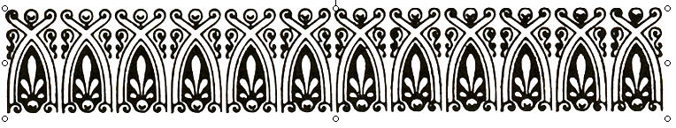

Ölüme karşı
Sürrealizm size gizli bir dernek olan ölümün yolunu gösterecektir. Elinize, Hafıza sözcüğünün başındaki derin H harfini gömerek, eldiven geçirecektir. Son istekleriniz ve vasiyetnameniz için gereken düzenlemeleri yapmayı unutmayın: Şahsen ben, mezarlığa bir nakliye aracı içinde götürülmek isterim. Dostlarım Bir Nebze Gerçekliğe dair Konuşma metninin tüm son nüshalarını imha etsinler.

Dil, insanoğluna onu Sürrealist biçimde kullanabilmesi için verilmiştir. Başkaları tarafından anlaşılmasını sağlayacak ölçüde, kendini az çok ifade etmeyi becerir ve bunu yaptığında, en bayağılar arasından seçilip bir araya getirilmiş birtakım fonksiyonları yerine getirmiş olur. Bunları yaptığı sırada kendisine ortalamanın üzerinde bir hedef belirlemiş olmaması şartıyla, diğer deyişle kendisini birisiyle yapılan bir sohbeti (salt sohbet etme zevki uğruna) sürdürmekle sınırlandırdığı durumda, konuşmak, bir mektup okumak onun için gerçek bir sorun teşkil etmez. Çıkacak olan sözcükler veya tamamlamak üzere olduğu cümlenin ardından gelecek cümle hakkında hiçbir endişeye kapılmaz. Son derece basit bir sorunun karşısında, yıldırım gibi bir cevap verebilecektir. Başkalarıyla temas sonucunda edinilmiş küçük tiklerin yokluğunda, hiçbir telaşa kapılmadan sınırlı sayıda konular üzerinde bir fikir yürütebilir; bunu yapmak için konuşmadan önce “ona kadar sayması” ya da vaktinden önce herhangi bir şey tasarlaması gerekmez. Daha hassas ilişkiler kurmaya karar verdiğinde, bu ilk taslak melekesinin sadece ona zararının dokunacağı konusunda onu kim ikna edebilmiştir ki? Üzerinde konuşmayı, hakkında üretken biçimde yazı yazmayı reddedeceği hiçbir şey yoktur. İnsanın kendisini dinlemesinden, yazdıklarını okumasından kaynaklanan her şey doğaüstü olanın, o hayranlık verici yardımın askıya alınmasına karşılık gelir. Kendimi anlamak için hiç acelem yok (Yeter! Kendimi her zaman anlayabilirim). Bana ait olan şu ya da bu cümlenin en azından bir an için, bir şekilde hayal kırıklığına uğrattığı ortaya çıkarsa, onun günahlarını affettirmek için güvenimi bir sonraki cümleye bağlarım: Öncekine tekrar tekrar başlamaktan veya parlatıp cilalamaktan dikkatle kaçınırım. Benim için ölümcül olabileceği kanıtlanmış tek şey en küçük ivme kaybıdır. Sözcükler, birbirini izleyen sözcük grupları kendi aralarında en büyük dayanışmayı sergiler. Bir grubun diğerine kıyasla daha iyi olduğu kararını vermek bana kalmamıştır. Müdahale etmek mucizevî bir eşdeğere kalmıştır ve gerektiğinde o müdahale eder.
Sonsuza dek geçerli kılmaya çalıştığım bu sınırlandırılmamış dil, bana yaşamın tüm koşullarına ayak uydurabilecekmiş gibi görünen bu dil yalnızca beni elimdeki araçlardan yoksun bırakmakla kalmayıp, aynı zamanda tam aksine olağanüstü bir berraklık kazandırmakta ve bunu kendisini en az beklediğim alanda yapmaktadır. Hatta bana ders verdiğini öne sürecek kadar ileri gideceğim ve gerçekten de, anlamlarını unutmuş olduğum sürreal sözcükleri kullanma fırsatım oldu. Sonradan bunları kullanma biçimimin tanımlarıyla mükemmel şekilde uygun düştüğünü doğrulayabilecek duruma geldim. Bu, insanı aslında “öğrenmediği”, tek yaptığı şeyin “yeniden öğrenmek” olduğu düşüncesine götürür. Kendimi bu şekilde bilgilendirdiğim mesut konuşma fırsatları olmuştur. Ve ben burada, sadece kendileriyle binlerce kez tekrarlanan ruhsal bir temasın ardından edinebildiğim nesnelerin şiirsel bilincinden söz etmiyorum.
Sürrealist dil biçimleri kendilerini en iyi şekilde diyaloglara uyarlamaktadır. Burada iki düşünce birbiriyle karşı karşıya gelir: Bir tanesi iletilmek üzereyken, diğeri bununla meşguldür; ancak bununla nasıl meşgul olmaktadır? Bunu kendi bünyesine dahil ettiğini varsaymak, her ne kadar fazlasıyla olasılık dışı olsa da, onun için tamamıyla diğer düşüncenin sırtından geçinmesinin mümkün olduğu bir süre zarfının bulunduğunu kabul etmekle eşdeğerdir. Ve aslında, verdiği dikkat tamamıyla dışsaldır; insanın elinden gelebilecek tüm anlayış kuvvetiyle, düşüncenin yalnızca onaylayacak veya reddedecek -genellikle reddedecek- kadar süresi vardır. Üstüne üstlük, bu dil biçimi meselenin kalbinin inceden inceye anlaşılmasına da olanak tanımaz. Tüm edebiyle reddedemeyeceği bir temenninin esiri olan benim dikkatim muhalif düşünceye düşmanmış gibi muamele eder; sıradan sohbette kullandığı sözcüklerle, konuşma simgeleriyle hemen hemen her zaman onu “ele geçirir”; beni onları gerçek anlamlarından saptırarak verdiğim cevapla avantajlı konuma getirir. Bu öyle bir dereceye kadar doğrudur ki, duyu merkezinden kaynaklanan bozuklukların hastanın tüm dikkatini kapladığı bazı patolojik ruh hallerinde hasta bir taraftan soruları yanıtlamaya devam ederken kendisini karşısında konuşulan son sözcüğü ya da birtakım izlerini kendi zihninde bulduğu Sürrealist cümlenin son bölümünü yakalamakla sınırlandırır.
S. “Kaç yaşındasın?” Y. “Sen.” (Ekolali)[19]*
S. “Adın nedir?” Y. “Kırk beş ev.” (Ganser sendromu ya da konu dışı yanıtlar)
Bu bozukluğun bir miktar izinin bulunmadığı hiçbir sohbet yoktur. Onu dikte eden sosyal olma çabası ve bu konuda sahip olduğumuz hatırı sayılır deneyim, bunu geçici olarak gizlememizi sağlayan tek şeylerdir. Elinden gelenin en iyisiyle -bununla en talepkâr okurları kastediyorum- sürekli şekilde çatışma halinde olmak, bu kitabın da büyük bir zayıflığıdır. Yukarıda alıntı yaptığım, doktor ile akıl hastası arasında geçen o çok kısa diyalogda aslında alışverişten kârlı çıkan akıl hastası olmuştur. Çünkü yanıtlarıyla onu muayene eden doktorun dikkatini zorla kendisinin üzerinde toplamıştır ve çünkü soruları soran kişi kendisi değildir. Bu, söz konusu noktada onun düşüncesinin daha güçlü olduğu anlamına mı gelmektedir? Belki. Artık yaşını ya da adını önemsemeyecek kadar özgürleşmiştir.
Bu çalışmanın konusu olan Şiirsel Sürrealizm, her iki konuşmacıyı da nezaketin gerektirdiği tüm yükümlülüklerden kurtararak bu noktaya kadar çalışmalarını diyalogun mutlak gerçekliğinde yeniden oluşturulması üzerinde odaklamıştır. Her ikisi de bundan herhangi özel bir diyalektik zevk almaya çalışmaksızın ve komşusuna, ne olursa olsun, herhangi bir şey empoze etmeye uğraşmaksızın yalnızca kendi iç monologunu sürdürür. Karşılıklı olarak dile getirilen yorumlar, genellikle olduğu üzere her ne kadar önemsiz de olsa bir tez geliştirmeyi amaçlamaktan uzaktır; bunlar olabildiğince muhalif niteliktedir. Ortaya çıkardıkları yanıta gelince; bu, prensipte konuşan kişinin şahsi gururuna tamamıyla kayıtsız kalmaktadır. Sözcükler, imgeler yalnızca dinleyicinin zihnine yönelik pek çok atlama tahtalarıdır. İlk katıksız Sürrealist yapıt olan Les Champs magnétiques’de Barrières başlığı altında toplanan, Soupault ile benim kendimizi kısmi konuşmacılar olarak gösterdiğimiz sayfalar da bu şekilde değerlendirilmelidir.
Sürrealizm, kendilerini ona adayan kişilerin canları istediğinde onu yüzüstü bırakmasına izin vermez. Zihin üzerinde uyuşturucularınkine çok benzer bir etkisi olduğuna inanmak için her türlü sebebimiz vardır; tıpkı uyuşturucular gibi belirli bir ihtiyaç hali yaratır ve insanı korkunç başkaldırılara sürükleyebilir. Bunun aynı zamanda sahte bir cennet olduğu da söylenebilir ve insanın ondan aldığı zevk Baudelaire’in başkalarıyla aynı sebeplere dayanan eleştirisinden kaynaklamaktadır. Böylelikle, yaratabileceği gizemli etkilerin ve özel zevklerin tahlili, Sürrealizm’in pek çok açıdan yalnızca mutlu azınlıkla sınırlandırılmaması gerekiyor gibi gözüken yeni bir kötülük olarak ortaya çıktığını göstermektedir; tıpkı haşhaş gibi, her çeşit zevki tatmin etme yeteneğine sahiptir -söz konusu tahlilin de hâlihazırdaki çalışmada yer alması gerekir.
1. Tıpkı afyonun yarattığı imgelerde olduğu gibi, Sürrealist imgeleri de insanın çağırmadığı doğrudur; işin doğrusu, bunlar “ona kendiliğinden, adeta zorbalıkla gelmektedir. Onları kovamaz; çünkü şimdiki halde iradesi güçsüzdür ve artık melekelerini kontrol edememektedir.”[20]* Eğer başkaları da benim gibi, Reverdy’nin tanımını kabul ederse, “iki uzak gerçeklik” olarak adlandırdığı şeyi isteyerek bir araya getirmenin mümkün olmadığı görülecektir. Uzun lafın kısası, yanyanalık sağlanır veya sağlanamaz. Şahsen ben Reverdy’nin yapıtındaki
Derede, akan bir şarkı var
veya
Gün, beyaz bir masa örtüsü gibi katlandı
veya:
Dünya tekrar çuvala giriyor
gibi imgelerin en alt düzeyde dahi olsa önceden tasarlandığına inanmayı kesinlikle reddediyorum. Kanımca, “zihnin” birbirleriyle karşılıklı duran iki gerçekliğin “ilişkisini kavradığını” öne sürmek hatalı olacaktır. Her şeyden önce zihin bilinçli olarak hiçbir şey yakalamamıştır. Sanki iki sözcüğün tesadüfî yanyanalığından muazzam şekilde duyarlı olduğumuz bir ışık, imgenin ışığı doğmuştur. İmgenin değeri, elde edilen kıvılcımın güzelliğine bağlıdır; bu, sonuç olarak iki iletken madde arasındaki potansiyel farkının fonksiyonudur. Fark, bir karşılaştırmada[21]* olduğu gibi, sadece bir parça varsa o halde kıvılcım eksiktir. Şimdi, söyleyebileceğim kadarıyla bu denli birbirinden uzak iki gerçekliğin birlikteliğini sağlamak insanın elinde değildir. İdrak ettiğimiz üzere, fikirlerin birliği prensibi bunun aleyhine bir etkide bulunur. Aksi halde, Reverdy’nin de benim kadar şiddetle tasvip etmediği “eliptik” bir sanata dönüş yapmamız gerekecekti. Bu yüzden, zihnin kıvılcımı yaratmak gibi belirli bir amaç doğrultusunda imgenin iki halini birbirlerinden çıkarsama yoluyla oluşturmadığını, bunların Sürrealist olarak adlandırdığım faaliyetin kendiliğinden ortaya çıkan ürünleri olduğunu, mantığın rolünün ise ışıklar saçan olgunun notlarını almak ve onu kavramakla sınırlandırıldığını kabul etmek mecburiyetindeyiz.
Ve kıvılcım boyutlarının artarak, tıpkı yoğunluğu azaltılmış gazlarda meydana gelen büyüklüğe erişmesi durumunda herkesin kolayca ulaşabileceği bir noktaya yerleştirmek istediğim otomatik yazıyla yaratılan Sürrealist atmosfer olabilecek en güzel imgelerin üretilmesi açısından özellikle iletkendir. Hatta insan imgelerin bu baş döndürücü koşuda yalnızca zihnin işaret direkleri gibi göründüğünü söyleyecek kadar ileri gidebilir. Yavaş yavaş zihin bu imgelerin yüce gerçekliğine ikna olur. İlk başta kendisini onlara teslim etmekle sınırlandırmasına karşın, kısa bir süre sonra mantığını pohpohladıklarını ve böylece bilgisini artırdıklarının farkına varır. Zihin arzularının açığa çıktığı, avantajların ve dezavantajların sürekli şekilde tüketildiği, muğlâklığının kendisine ihanet etmediği sınırsız düzlemlerin bilincine varır. Onu kendinden geçiren, ona parmaklarındaki ateşi üflemesi için neredeyse hiç zaman bırakmayan bu imgelerle taşınarak ileri gider. Bu, bütün gecelerin en güzeli, şimşeklerle dolu gece; bununla kıyaslandığında, gün adeta gecedir.
Sürrealist imgelerin sayılamayacak kadar çok türü bugün yapmak niyetinde olmadığım bir sınıflandırmayı gerekli kılar. Onları özel benzerliklerine göre gruplandırmak beni çok uzaklara götürecektir; temelde bahsetmek istediğim şey, bunların ortak özellikleridir. Benim için, itiraf etmem gerekir ki, en büyük özellikleri son derece gelişigüzel olan şey ile kullanılan dile tercüme edilmesi en uzun süreyi alan şeydir; bunun nedeni, görünüşte muazzam miktarda çelişki barındırması veya sözcüklerinden birinin tuhaf bir şekilde gizlenmiş olmasıdır; ya da kendisini sansasyonel bir şey olarak sunmasına rağmen, zayıf bir şekilde (çünkü birdenbire pergelinin açısını daraltmaktadır) sonlanıyor gibi görünmesi veya kendi kendisinden gülünç bir resmi haklı çıkarma oluşturması veya sanrılara yol açan türden olması veya çok doğal şekilde, soyuta somut ya da somuta soyut maskesi takması veya bazı fiziksel özelliklerin inkâr edildiğini ima etmesi veya kahkahalara sebep olması bunun nedenleri arasında olabilir. Aşağıda, sırayla buna ait birkaç örnek sunulmuştur:
Şampanyanın yakutları. (LAUTRÉAMONT)
Büyüme eğilimi, organizmalarının bünyesine dahil ettiği moleküllerin miktarıyla orantılı olmayan yetişkinlerdeki göğüsün kavruk kalma yasası kadar güzel. (LAUTRÉAMONT)
Bir kilise bir çan kadar göz kamaştırıcı şekilde duruyordu. (PHILIPPE SOUPAULT)
Rrose Sélavy’nin uykusunda,
bir kuyudan çıkıp geceleri ekmeğini yemeye gelen bir cüce var. (ROBERT DESNOS)
Köprüde, tekir kedi başlı bir çiğ tanesi uykuya dalıyor. (ANDRÉ BRETON)
Biraz solda, sezinlemiş olduğum gökyüzümde, özgürlüğün rahatsızlıklarının ışıldayan camını görüyorum; ancak, bu kuşkusuz bir kan ve cinayet sisinden başka bir şey değil. (LOUIS ARAGON)
Alevler içindeki ormanda
Aslanlar tazeydi. (ROBERT VITRAC)
Bir kadının çoraplarının renginin gözleriyle benzerlik taşıması şart değildir; bu, ismi şu anda lazım olmayan bir filozofun şunları söylemesine yol açmıştır: “Dört ayaklı hayvanlarla karşılaştırıldığında, kafadan bacaklıların ilerlemeden nefret etmek için daha çok sebebi var.” (MAX MORISE)
1’incisi. Biz hoşlansak da hoşlanmasak da, zihnin kendi içinde çeşitli taleplerini tatmin edecek yeterli şey bulunmaktadır. Tüm bu imgeler zihnin genel olarak kendisine izin verdiği iyicil zevklerden daha fazla bir şey için hazır olduğunu açıkça göstermektedir. Bu, kendisine emanet edilen ideal miktardaki olayın onun işine yaramasını sağlamanın tek yoludur.[22]* Bu imgeler ona olağan dağılma yeteneğinin kapsamını ve bunun kendisi için sakıncalı olabilecek yönlerini gösterir. Son tahlilde, söz konusu imgelerin zihne rahatsızlık vermesi onlar açısından o kadar da kötü bir şey değildir; çünkü zihni rahatsız etmek onu yanlış yola sevk etmektir. Yukarıda alıntı yaptığım cümleler bunun için yeterli ortamı sağlamaktadır. Ancak, bunların tadına varan zihin oradan hareketle, doğru yolda olduğu kanaatine varır. Zihin bir başınayken yersiz itirazlarla kendisini suçlu çıkarabilmekten acizdir; korkacak hiçbir şeyi olmadığı gibi, üstüne üstlük her şeyi kucaklamaya gayret etmektedir.
2’incisi. Sürrealizm’in derinliklerine dalan zihin çocukluğunun en güzel kısımlarını parıldayan bir heyecanla yeniden yaşar. Bu, böylesi bir zihin açısından boğulan insanın bir saniyeden daha az sürede yaşamının tüm aşılamaz anlarını bir kez daha gözden geçirdiği kesinlikle benzerlik taşımaktadır. Kimileri bana bu benzerliğin fazla yüreklendirici olmadığını söyleyebilirler. Fakat benim hiçbir şekilde bana bunu söyleyenleri yüreklendirmek gibi bir niyetim yok. Çocukluk hatıralarından ve birkaç başka hatıradan, önce bir bütünleşmemişlik, ardından varolanların içinde en üretkeni olduğunu iddia ettiğim yanlış yola sapmış olma duygusu doğar. Belki de insanın “gerçek yaşamı”na en yakın duran şey çocukluktur; kişinin tasarrufundaki şeylerin ötesinde, sınırlardan özel geçiş kartlarından ayrı birkaç bedava bilete tekabül eden çocukluk; her şeyin her şeye rağmen insanın verimli ve tehlikesiz şekilde kendi kendisine sahip olmasını sağlamak üzere işbirliği ettiği çocukluk. Sürrealizm sayesinde bu fırsat ikinci kez kapımızı çalıyor. Sanki hâlâ kurtuluşumuza veya mahvoluşumuza doğru koşuyoruz. Gölgelerin içinde tekrar kıymetli bir dehşetle karşılaşıyoruz. Tanrıya şükürler olsun ki, bu yalnızca Araf’mış. Bir ürpertiyle, gizem düşkünlerinin tehlikeli bölge adını verdikleri yerden geçiyoruz. Uyandığımda, pusuda bekleyen canavarları da kaldırıyorum; henüz bana karşı fazla kötü niyetli değiller ve ben de, onlardan korktuğum müddetçe, kaybolamam. İşte, Soupault ile beni birazdan ayaklarımızın üzerine kapatılacak işkence aleti içinde korkudan titretmiş olan “kadın kafalı filler ve uçan aslanlar”, işte beni hâlâ biraz korkutan “eriyen balık”. ERİYEN BALIK; yoksa ben eriyen balık değil miyim? Balık burcundanım ve insan kendi düşüncelerinde eriyebilir! Sürrealizmin florası ve faunası tinseldir.
3’üncüsü. Yakın bir gelecekteki herhangi bir zamanda basmakalıp bir Sürrealist modelin kurulacağına inanmıyorum. Az önce alıntı yaptığım ve bize tek başlarına bir mantıksal analiz ve dikkatli bir dilbilgisi analizi vaat edebilecek diğer pek çok metin de dahil olmak üzere, bu türden tüm metinlerin ortak karakteristikleri Sürrealist düzyazının zaman için geçirebileceği evrimi engellememektedir. Son beş yıl içinde bu tarzda yazmış olduğum ve çoğunu son derece düzensiz bulacak kadar müsamahakâr davrandığım yazıların oluşturduğu çok sayıda makalenin ardından gelen ve bu cildi dengeleyen kısa anekdotlar bana söylediklerime dair göz kamaştırıcı bir kanıt sunmaktadır. Okura Sürrealist katkının onun bilinci üzerinde yaratabileceği yararlı etkilerin tasvirini yapmaları nedeniyledir ki, bunların çok daha değersiz oldukları hükmüne varmıyorum.
Dahası, Sürrealist yöntemler kendilerine kulak verilmesini talep edecektir. Mesele birtakım bağlantılardan arzu edilen anındalığı yakalamaya gelince her yol mubahtır. Picasso ve Braque’ın eserlerine yerleştirdikleri kâğıt parçaları en sertinden edebi bir tahlile yazılan önsözdeki basmakalıp laflarla aynı değeri taşımaktadır. Hatta gazetelerden kesilmiş manşetlerle ve manşet parçalarıyla olabilecek en gelişigüzel bir araya getirme yöntemiyle (mümkünse, sözdizimine dikkatle bakın) elde ettiğimiz şeyin ŞİİR olarak adlandırılmasına da izin verilebilir: